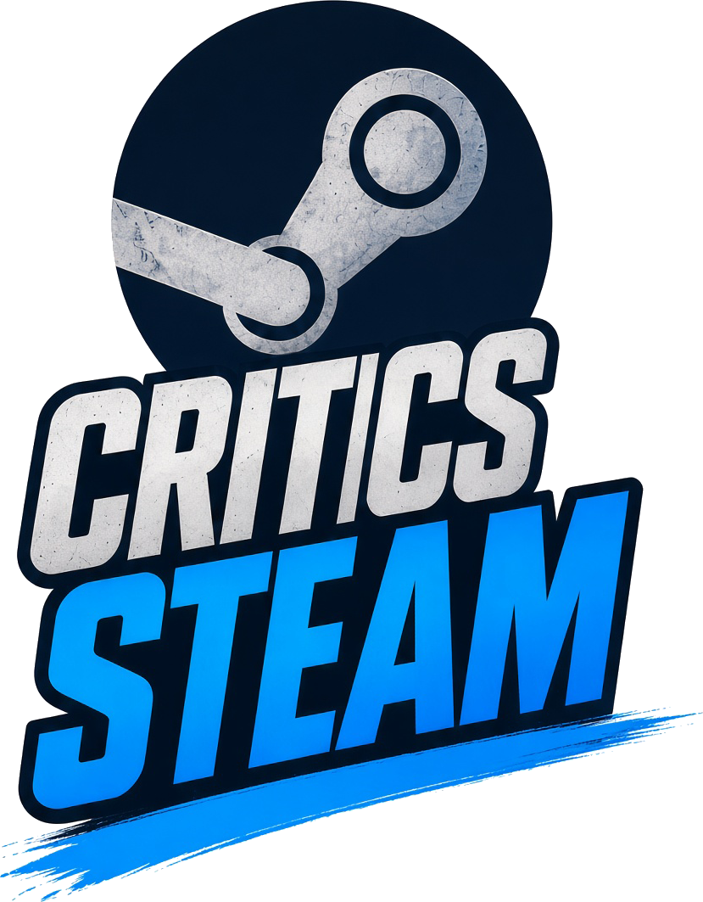
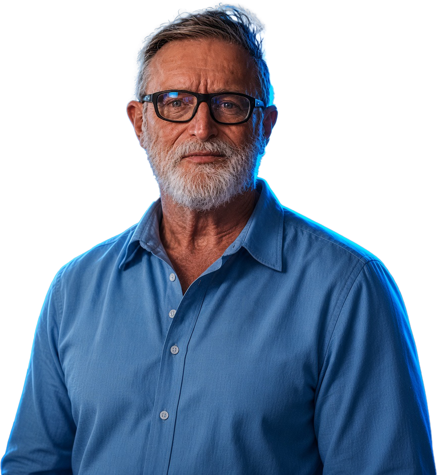

Легендарная
критика
только здесь.
Реальные обзоры из Steam в устах знаменитостей. Сюрреализм, ирония и немного эрудиции. 6 лет проекта для души.


Испытания критика
Пять игр по настоящему архиву. Сюрреализм в них не входит — его лучше читать целиком.
02 / лонгридИстория и смысл
От поста №1 «Legion TD 2» до ренессанса 2026.
03 / текстыСюрреализм
132 полных текстов, без сокращений.
04 / летописьПолный архив
ВКонтакте и Telegram, рубрики только по хэштегам.
Зал славы
Все обзоры знаменитостей →«…откровенно смешные/ироничные обзоры на продукты массовой медиа, в основном на игры, зачастую с площадки Steam, приписанные к каким-либо личностям».
Рядом с ними — #Сюрреализм: собственные длинные тексты, которые мы бережём целиком. Читать историю →
Свежее
Весь архив →
Ведьмак Истории Кровная Вражда
» Ведьмак Истории Кровная Вражда /
10 ноября 2026 · 7 👁
Assassin's Creed Valhalla
» Assassin's Creed Valhalla /
9 ноября 2026 · 10 👁
Fallout 76
» Fallout 76 /
8 ноября 2026 · 11 👁
Худшая игра, что он видел..
Худшая игра, что он видел.. /
7 ноября 2026 · 23 👁
Повар Слов
» Повар Слов /
6 ноября 2026 · 16 👁
DOTA 2
» DOTA 2 Перешлите Сергею. /
5 ноября 2026 · 16 👁
Ken Follett's The Pillars of the Earth
» Ken Follett's The Pillars of the Earth » Beyond: Two Souls » Mafia: Definitive Edition /
4 ноября 2026 · 17 👁
Saints Row: The Third
» Saints Row: The Third /
3 ноября 2026 · 22 👁«Пока есть Вы, будут и Критики Steam»
Небольшое, дружное, душевное сообщество. Заходите.